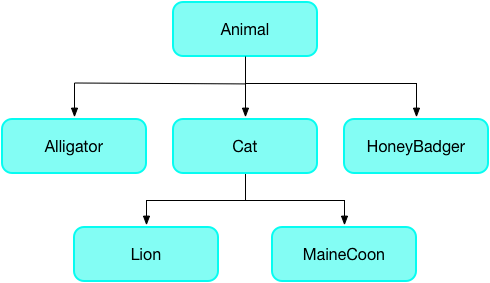
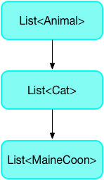
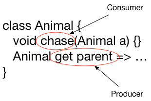

The Dart language is type safe: it uses a combination of static type checking and runtime checks to ensure that a variable’s value always matches the variable’s static type, sometimes referred to as sound typing. Although types are mandatory, type annotations are optional because of type inference.
For a full introduction to the Dart language, including types, see the language tour.
One benefit of static type checking is the ability to find bugs at compile time using Dart’s static analyzer.
You can fix most static analysis errors by adding type annotations to generic
classes. The most common generic classes are the collection types
List<T> and Map<K,V>.
For example, in the following code the printInts() function prints an integer list,
and main() creates a list and passes it to printInts().
void printInts(List<int> a) => print(a);
void main() {
final list = [];
list.add(1);
list.add('2');
printInts(list);
}The preceding code results in a type error on list (highlighted
above) at the call of printInts(list):
error - The argument type 'List<dynamic>' can't be assigned to the parameter type 'List<int>'. - argument_type_not_assignable
The error highlights an unsound implicit cast from List<dynamic> to List<int>.
The list variable has static type List<dynamic>. This is because the
initializing declaration var list = [] doesn’t provide the analyzer with
enough information for it to infer a type argument more specific than dynamic.
The printInts() function expects a parameter of type List<int>,
causing a mismatch of types.
When adding a type annotation (<int>) on creation of the list
(highlighted below) the analyzer complains that
a string argument can’t be assigned to an int parameter.
Removing the quotes in list.add('2') results in code
that passes static analysis and runs with no errors or warnings.
void printInts(List<int> a) => print(a);
void main() {
final list = <int>[];
list.add(1);
list.add(2);
printInts(list);
}What is soundness?
Soundness is about ensuring your program can’t get into certain
invalid states. A sound type system means you can never get into
a state where an expression evaluates to a value that doesn’t match
the expression’s static type. For example, if an expression’s static
type is String, at runtime you are guaranteed to only get a string
when you evaluate it.
Dart’s type system, like the type systems in Java and C#, is sound. It
enforces that soundness using a combination of static checking
(compile-time errors) and runtime checks. For example, assigning a String
to int is a compile-time error. Casting an object to a String using
as String fails with a runtime error if the object isn’t a String.
The benefits of soundness
A sound type system has several benefits:
-
Revealing type-related bugs at compile time.
A sound type system forces code to be unambiguous about its types, so type-related bugs that might be tricky to find at runtime are revealed at compile time. -
More readable code.
Code is easier to read because you can rely on a value actually having the specified type. In sound Dart, types can’t lie. -
More maintainable code.
With a sound type system, when you change one piece of code, the type system can warn you about the other pieces of code that just broke. -
Better ahead of time (AOT) compilation.
While AOT compilation is possible without types, the generated code is much less efficient.
Tips for passing static analysis
Most of the rules for static types are easy to understand. Here are some of the less obvious rules:
- Use sound return types when overriding methods.
- Use sound parameter types when overriding methods.
- Don’t use a dynamic list as a typed list.
Let’s see these rules in detail, with examples that use the following type hierarchy:

Use sound return types when overriding methods
The return type of a method in a subclass must be the same type or a
subtype of the return type of the method in the superclass.
Consider the getter method in the Animal class:
class Animal {
void chase(Animal a) { ... }
Animal get parent => ...
}The parent getter method returns an Animal. In the HoneyBadger subclass,
you can replace the getter’s return type with HoneyBadger
(or any other subtype of Animal), but an unrelated type is not allowed.
class HoneyBadger extends Animal {
@override
void chase(Animal a) { ... }
@override
HoneyBadger get parent => ...
}class HoneyBadger extends Animal {
@override
void chase(Animal a) { ... }
@override
Root get parent => ...
}Use sound parameter types when overriding methods
The parameter of an overridden method must have either the same type or a supertype of the corresponding parameter in the superclass. Don’t “tighten” the parameter type by replacing the type with a subtype of the original parameter.
Consider the chase(Animal) method for the Animal class:
class Animal {
void chase(Animal a) { ... }
Animal get parent => ...
}The chase() method takes an Animal. A HoneyBadger chases anything.
It’s OK to override the chase() method to take anything (Object).
class HoneyBadger extends Animal {
@override
void chase(Object a) { ... }
@override
Animal get parent => ...
}The following code tightens the parameter on the chase() method
from Animal to Mouse, a subclass of Animal.
class Mouse extends Animal {...}
class Cat extends Animal {
@override
void chase(Mouse x) { ... }
}This code is not type safe because it would then be possible to define a cat and send it after an alligator:
Animal a = Cat();
a.chase(Alligator()); // Not type safe or feline safe.Don’t use a dynamic list as a typed list
A dynamic list is good when you want to have a list with
different kinds of things in it. However, you can’t use a
dynamic list as a typed list.
This rule also applies to instances of generic types.
The following code creates a dynamic list of Dog, and assigns it to
a list of type Cat, which generates an error during static analysis.
class Cat extends Animal { ... }
class Dog extends Animal { ... }
void main() {
List<Cat> foo = <dynamic>[Dog()]; // Error
List<dynamic> bar = <dynamic>[Dog(), Cat()]; // OK
}Runtime checks
Runtime checks deal with type safety issues that can’t be detected at compile time.
For example, the following code throws an exception at runtime because it’s an error to cast a list of dogs to a list of cats:
void main() {
List<Animal> animals = [Dog()];
List<Cat> cats = animals as List<Cat>;
}Type inference
The analyzer can infer types for fields, methods, local variables,
and most generic type arguments.
When the analyzer doesn’t have enough information to infer
a specific type, it uses the dynamic type.
Here’s an example of how type inference works with generics.
In this example, a variable named arguments holds a map that
pairs string keys with values of various types.
If you explicitly type the variable, you might write this:
Map<String, dynamic> arguments = {'argA': 'hello', 'argB': 42};Alternatively, you can use var or final and let Dart infer the type:
var arguments = {'argA': 'hello', 'argB': 42}; // Map<String, Object>The map literal infers its type from its entries,
and then the variable infers its type from the map literal’s type.
In this map, the keys are both strings, but the values have different
types (String and int, which have the upper bound Object).
So the map literal has the type Map<String, Object>,
and so does the arguments variable.
Field and method inference
A field or method that has no specified type and that overrides a field or method from the superclass, inherits the type of the superclass method or field.
A field that does not have a declared or inherited type but that is declared with an initial value, gets an inferred type based on the initial value.
Static field inference
Static fields and variables get their types inferred from their initializer. Note that inference fails if it encounters a cycle (that is, inferring a type for the variable depends on knowing the type of that variable).
Local variable inference
Local variable types are inferred from their initializer, if any. Subsequent assignments are not taken into account. This may mean that too precise a type may be inferred. If so, you can add a type annotation.
var x = 3; // x is inferred as an int.
x = 4.0;num y = 3; // A num can be double or int.
y = 4.0;Type argument inference
Type arguments to constructor calls and generic method invocations are inferred based on a combination of downward information from the context of occurrence, and upward information from the arguments to the constructor or generic method. If inference is not doing what you want or expect, you can always explicitly specify the type arguments.
// Inferred as if you wrote <int>[].
List<int> listOfInt = [];
// Inferred as if you wrote <double>[3.0].
var listOfDouble = [3.0];
// Inferred as Iterable<int>.
var ints = listOfDouble.map((x) => x.toInt());In the last example, x is inferred as double using downward information.
The return type of the closure is inferred as int using upward information.
Dart uses this return type as upward information when inferring the map()
method’s type argument: <int>.
Substituting types
When you override a method, you are replacing something of one type (in the old method) with something that might have a new type (in the new method). Similarly, when you pass an argument to a function, you are replacing something that has one type (a parameter with a declared type) with something that has another type (the actual argument). When can you replace something that has one type with something that has a subtype or a supertype?
When substituting types, it helps to think in terms of consumers and producers. A consumer absorbs a type and a producer generates a type.
You can replace a consumer’s type with a supertype and a producer’s type with a subtype.
Let’s look at examples of simple type assignment and assignment with generic types.
Simple type assignment
When assigning objects to objects, when can you replace a type with a different type? The answer depends on whether the object is a consumer or a producer.
Consider the following type hierarchy:
Consider the following simple assignment where Cat c is a consumer
and Cat() is a producer:
Cat c = Cat();In a consuming position, it’s safe to replace something that consumes a
specific type (Cat) with something that consumes anything (Animal),
so replacing Cat c with Animal c is allowed, because Animal is
a supertype of Cat.
Animal c = Cat();But replacing Cat c with MaineCoon c breaks type safety, because the
superclass may provide a type of Cat with different behaviors, such
as Lion:
MaineCoon c = Cat();In a producing position, it’s safe to replace something that produces a
type (Cat) with a more specific type (MaineCoon). So, the following
is allowed:
Cat c = MaineCoon();Generic type assignment
Are the rules the same for generic types? Yes. Consider the hierarchy
of lists of animals—a List of Cat is a subtype of a List of
Animal, and a supertype of a List of MaineCoon:

In the following example, you can assign a MaineCoon list to myCats because
List<MaineCoon> is a subtype of List<Cat>:
List<Cat> myCats = <MaineCoon>[];What about going in the other direction?
Can you assign an Animal list to a List<Cat>?
List<Cat> myCats = <Animal>[];This assignment doesn’t pass static analysis
because it creates an implicit downcast,
which is disallowed from non-dynamic types such as Animal.
To make this code pass static analysis, use an explicit cast, which might fail at runtime.
List<Cat> myCats = <Animal>[] as List<Cat>;Methods
When overriding a method, the producer and consumer rules still apply. For example:

For a consumer (such as the chase(Animal) method), you can replace
the parameter type with a supertype. For a producer (such as
the parent getter method), you can replace the return type with
a subtype.
For more information, see Use sound return types when overriding methods and Use sound parameter types when overriding methods.
Other resources
The following resources have further information on sound Dart:
- Fixing common type problems - Errors you may encounter when writing sound Dart code, and how to fix them.
- Fixing type promotion failures - Understand and learn how to fix type promotion errors.
- Sound null safety - Learn about writing code with sound null safety enabled.
- Customizing static analysis - How to set up and customize the analyzer and linter using an analysis options file.
- Dart 2 migration guide - How to update Dart 1.x code to Dart 2.